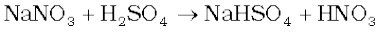
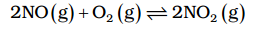
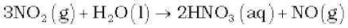
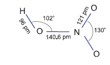

7.5 Nitric Acid
Nitrogen forms oxoacids such as H2N2O2 (hyponitrous acid), HNO2 (nitrous acid) and HNO3 (nitric acid). Amongst them HNO3 is the most important.
Preparation
In the laboratory, nitric acid is prepared by heating KNO3 or NaNO3 and concentrated H2SO4 in a glass retort.

On a large scale it is prepared mainly by Ostwald’s process. This method is based upon catalytic oxidation of NH3 by atmospheric oxygen.
Nitric oxide thus formed combines with oxygen giving NO2.

Nitrogen dioxide so formed, dissolves in water to give HNO3.

NO thus formed is recycled and the aqueous HNO3 can be concentrated by distillation upto ~ 68% by mass. Further concentration to 98% can be achieved by dehydration with concentrated H2SO4.
Properties

It is a colourless liquid (f.p. 231.4 K and b.p. 355.6 K). Laboratory grade nitric acid contains ~ 68% of the HNO3 by mass and has a specific gravity of 1.504.
In the gaseous state, HNO3 exists as a planar molecule with the structure as shown.
In aqueous solution, nitric acid behaves as a strong acid giving hydronium and nitrate ions.
HNO3(aq) + H2O(l) → H3O+(aq) + NO3– (aq)
Concentrated nitric acid is a strong oxidising agent and attacks most metals except noble metals such as gold and platinum. The products of oxidation depend upon the concentration of the acid, temperature and the nature of the material undergoing oxidation.
3Cu + 8 HNO3(dilute) → 3Cu(NO3)2 + 2NO + 4H2O
Cu + 4HNO3(conc.) → Cu(NO3)2 + 2NO2 + 2H2O
Zinc reacts with dilute nitric acid to give N2O and with concentrated acid to give NO2.
4Zn + 10HNO3(dilute) → 4 Zn (NO3)2 + 5H2O + N2O
Zn + 4HNO3(conc.) → Zn (NO3)2 + 2H2O + 2NO2
Some metals (e.g., Cr, Al) do not dissolve in concentrated nitric acid because of the formation of a passive film of oxide on the surface.
Concentrated nitric acid also oxidises non–metals and their compounds. Iodine is oxidised to iodic acid, carbon to carbon dioxide, sulphur to H2SO4, and phosphorus to phosphoric acid.
I2 + 10HNO3 → 2HIO3 + 10NO2 + 4H2O
C + 4HNO3 → CO2 + 2H2O + 4NO2
S8 + 48HNO3 → 8H2SO4 + 48NO2 + 16H2O
P4 + 20HNO3 → 4H3PO4 + 20NO2 + 4H2O
Brown Ring Test: The familiar brown ring test for nitrates depends on the ability of Fe2+ to reduce nitrates to nitric oxide, which reacts with Fe2+ to form a brown coloured complex. The test is usually carried out by adding dilute ferrous sulphate solution to an aqueous solution containing nitrate ion, and then carefully adding concentrated sulphuric acid along the sides of the test tube. A brown ring at the interface between the solution and sulphuric acid layers indicates the presence of nitrate ion in solution.
NO3- + 3Fe2+ + 4H+ → NO + 3Fe3+ + 2H2O
[Fe(H2O6)]2+ + NO → [Fe (H2O)5 (NO)]2+ + H2O
(brown)
Uses: The major use of nitric acid is in the manufacture of ammonium nitrate for fertilisers and other nitrates for use in explosives and pyrotechnics. It is also used for the preparation of nitroglycerin, trinitrotoluene and other organic nitro compounds. Other major uses are in the pickling of stainless steel, etching of metals and as an oxidiser in rocket fuels.